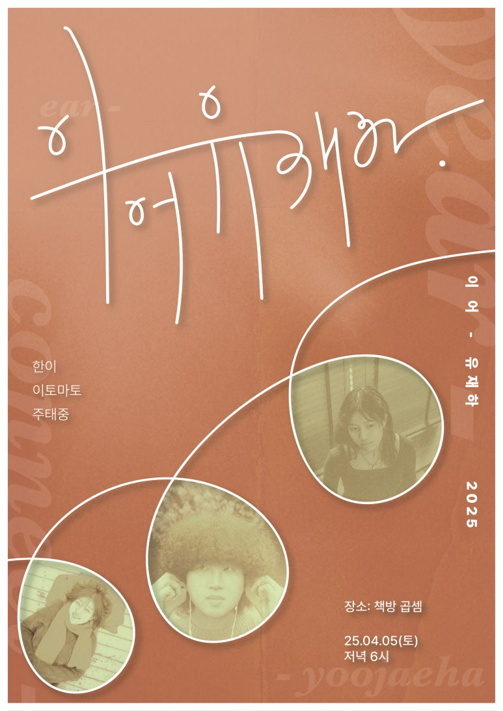
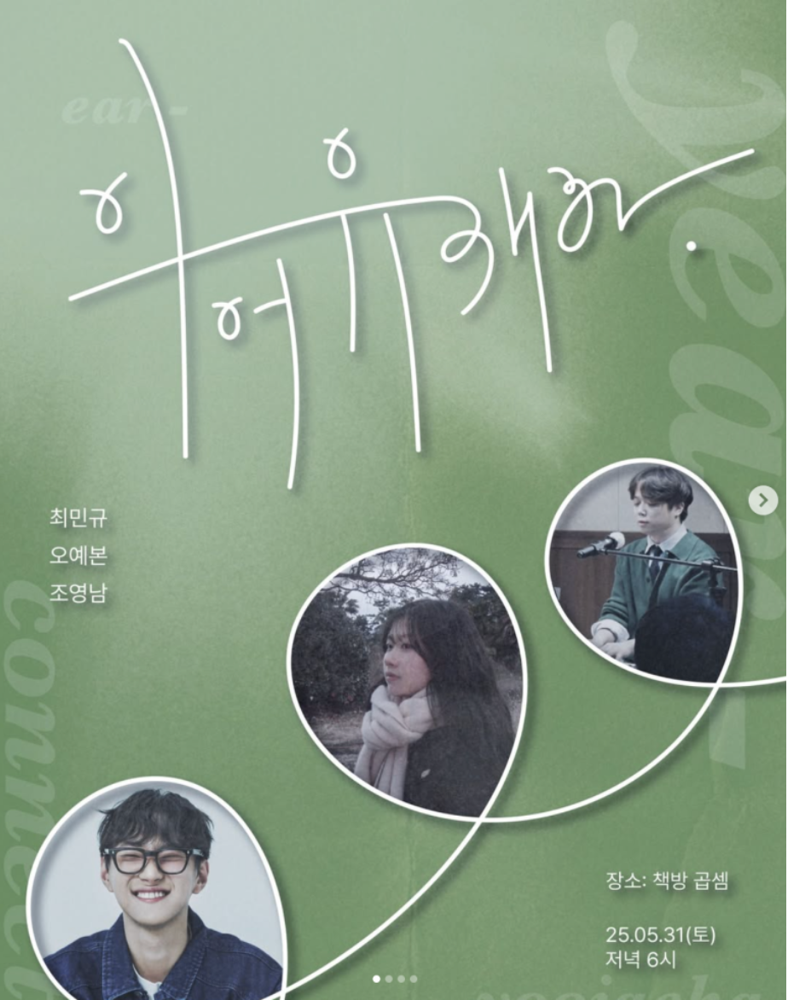
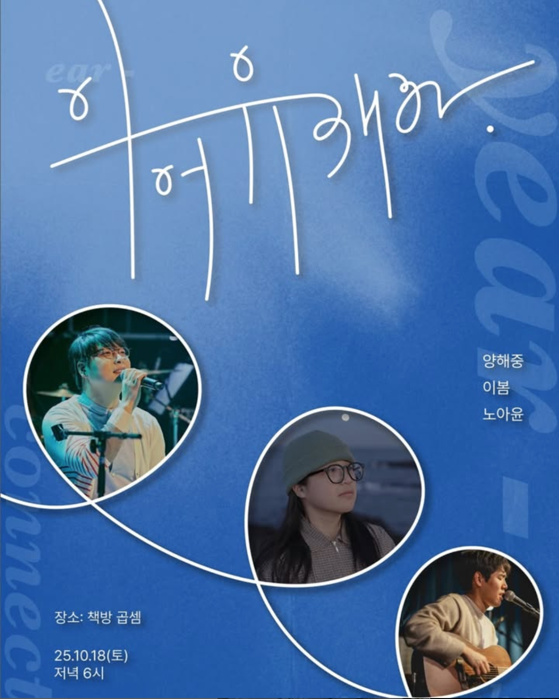

유재하 음악경연대회 총동문회는 유재하 음악경연대회의 주관사로 심사부터 대회 운영까지 전 과정에 함께합니다.
ACTIVITIES
주요 활동
01 · CONCOURS
유재하 음악경연대회
02 · PROJECT
이어유재하
유재하 동문들의 릴레이 공연.
YEAR2026년도 이어서 한해동안
EAR당신의 귓가에 머물
CONNECT유재하 동문 뮤지션들과의 연결



03 · YOUTUBE
유재하 음악경연대회 총동문회는 유재하 음악경연대회의 주관사로 심사부터 대회 운영까지 전 과정에 함께합니다.
유재하 동문들의 릴레이 공연.
YEAR2026년도 이어서 한해동안
EAR당신의 귓가에 머물
CONNECT유재하 동문 뮤지션들과의 연결


